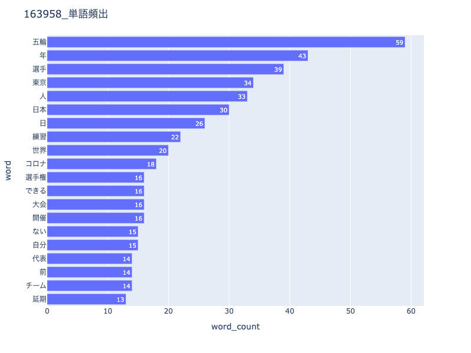
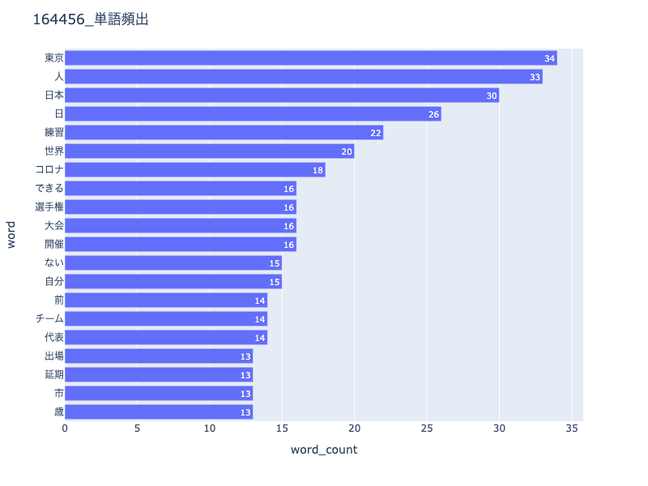

第8回
今と昔の言葉の変化ーオリンピック編ー
1963−1964
・1964東京オリンピック開催前年と開催年の記事をピックアップしてワードの頻出度を調べた

2020-2021
・2020東京オリンピックの開催予定年と開催年の記事をピックアップしてワードの頻出度を調べた

気づいたこと
・1963、64年の記事では、海外との交流網が今ほど発達していなかったためか、条約を示唆する言葉が2021年よりも多くみられた。
・一方、2020、2021年の記事では、新型コロナウイルスの流行により、その関連ワードが多数見られた
・新聞に載っているワードは、その時の世界情勢や国の状況などに関連するようなワードをスポーツの記事にも記載し、
時代背景がわかりやすいようになっている。